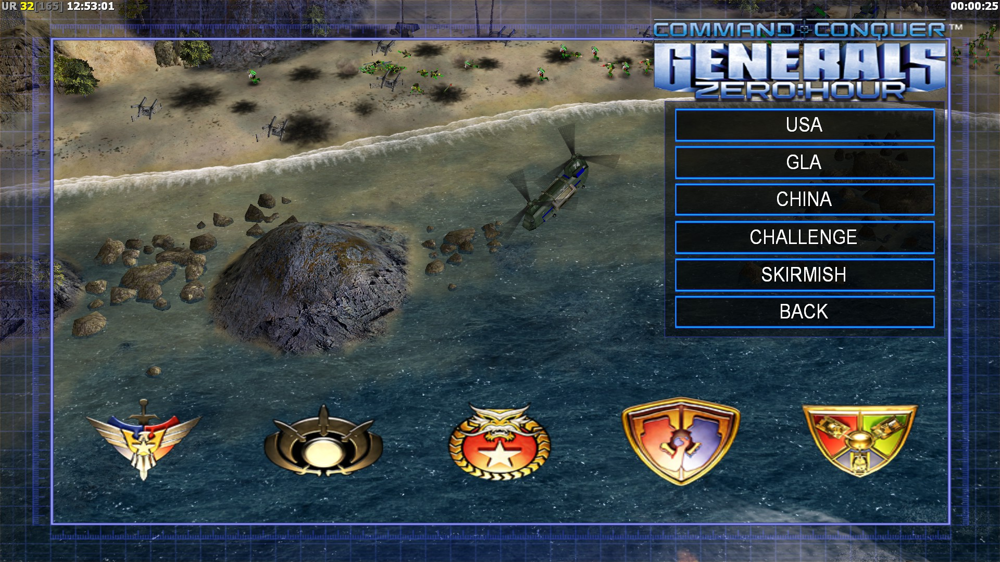
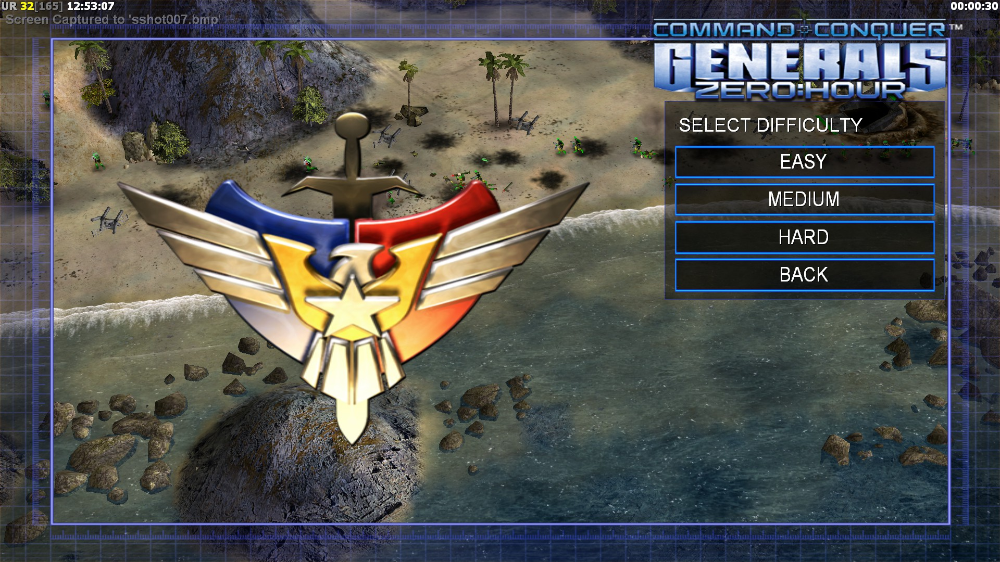
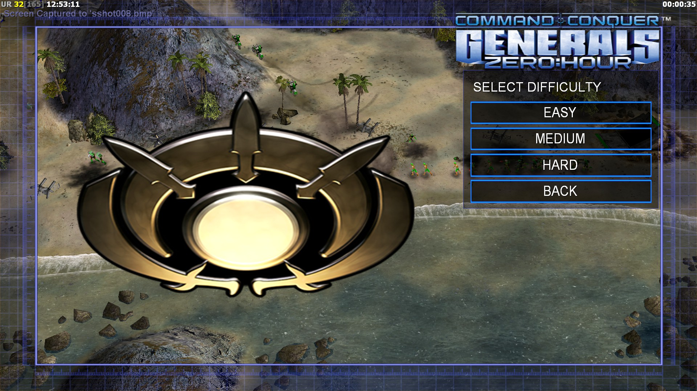
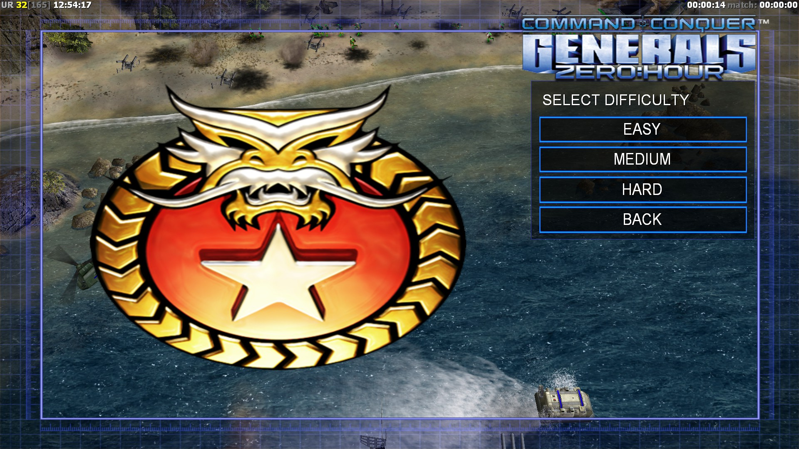

Campaign is a story mode where you can choose one of three factions that being USA, GLA or Global Liberation Army, and China. each with their own campaign in a chronological order USA and china are trying to defeat the GLA from destruction. there are up to five mission instead of seven mission in the last game named Command & Conquer generals

The USA is the first campaign it begins with the GLA launch a biological missile attack from Baikonur cosmodrom that was captured from the last game from GLA side the united states army retaliated and destroying the launch platform before a another missile was launch at them again. going through the campaign were you investigate about the toxic missile was launch. later USA uncovered the plans of the leader named "Dr. Thrax" he was developing a deadly toxin named "Anthrax Gamma" later some GLA forces wanted to help the USA due to Dr Thrax wanted kill everyone in major city including their own units that is in the city. the USA successfully stop Dr. Thrax missile on major cities.

The GLA is the second chapter where Dr. Thrax was defeat by the american. later the GLA receives a boost of morale with there new appointment supreme commander named general mohmar or the "Deathstrike" who escapes from the american pursuit then after reuniting the GLA by defeating Prince kassed one of the general who apecialised on stealth and assassination mission. after the defeat of Prince kassed the GLA capture one the american partical cannon and destory the aircarft carrier. later you captured the chinese and U.S technology at the end. the GLA forces has successfully forces american troops out of europe.

China is the last chapter in a chronological order the chinese enters europe after the U.S defeat. later china launch a nuclear missile at the captured U.S base so the GLA will not use the U.S weapons. the GLA retaliates by make an assault on one china nuclear reactor in mainland china. but the GLA lose the fight later china advance in germany where GLA forces still in the area. at the last mission you were up against the GLA and the captured U.S base now the GLA has the weaponry U.S against chinese.
